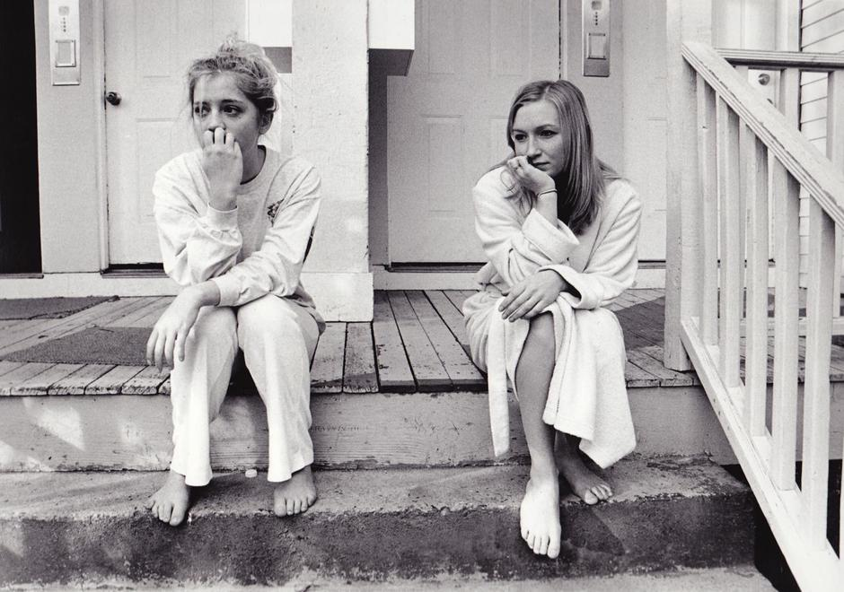

work samples


Christopher Conry was born in Burlington, Vermont, in 1984 and graduated from Emerson College in 2006 with a BFA (cum laude) in film, video and new media. He is a multimedia artist and also works in digital media and marketing with a focus on the arts, nonprofits and publishing. He lives in Brooklyn, New York City.